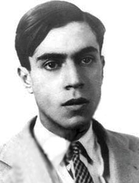
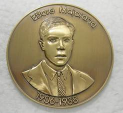

La misteriosa desaparición de Ettore Majorana
Escuché sobre Ettore Majorana en el programa de televisión Una Belleza Nueva, de Cristan Warken.
Al final de la interesante entrevista al físico frances Etienne Klein, Warken le pide que comente sobre alguno de los personajes descritos en su libro: Il était 7 fois la révolution. Fue ahí cuando escuché por primera vez sobre Majorana, y el misterio de su desaparación.

Su historia sería un argumento para una novela (y parece que ya la escribieron). En la red encontré esta interesante reseña donde hablan de la misteriosa desaparición de Majorana. Un verdadero genio, de acuerdo a Enrico Fermi su inteligencia era comparable a la de Newton o Galileo.
Nacido en Sicilia, Majorana fue un niño precoz, muy aficionado a las matemáticas.Nació en 1906, un año después de la primera publicación sobre la teoría especial de la relatividad de Einstein. Según Klein, Majorana es uno de esos jóvenes que revolucionaron la física inspirados por el trabajo de Einstein.
En 1928 ingresa al Instituto de Física Teórica en la Universidad de Roma, bajo la dirección de Enrico Fermi.
Al año siguiente [1929] recibió su doctorado con mención honorífica, pero durante los siguientes cinco años trabajó con Fermi resolviendo problemas de física nuclear. Aunque la producción académica de Majorana apenas asciende a nueve trabajos publicados entre 1928 y 1937, su obra es aún hoy admirada por la comunidad científica. Los trabajos revelan un minucioso conocimiento de datos experimentales, facilidad para simplificar problemas, una mente despierta y un perfeccionismo sin concesiones. Sus críticas hacia los trabajos de otros le valieron el alias de “El Gran Inquisidor”. Pero era igualmente severo consigo mismo, lo que podría explicar su ritmo lento y lo escaso de su producción académica. A instancias de Fermi, Majorana salió de Italia en 1933, becado por el Consejo Nacional de Investigación. En Leipzig, Alemania, conoció a Werner Heisenberg, también premio Nobel. La correspondencia posterior con Heisenberg revela que Majorana no sólo tuvo en él a un colega científico, sino también a un amigo íntimo. Heisenberg instó al joven italiano a publicar con más frecuencia, pero éste fue reticente. "
Pero en 1933 vuelve desde Alemania, con severos problemas gástricos y síntomas de agotamiento:
“Su asistencia al instituto se hizo irregular y luego se encerró en su casa: el prometedor y joven físico se convirtió en errnitaño. Durante cuatro años se desligó de sus amigos y dejó de publicar. Fue hasta 1937 que Majorana regresó a lo que podría Ilamarse una vida “normal”. Ese año, después de un largo silencio, publicó lo que sería su último documento científico y solicitó impartir la cátedra de física. En noviembre, fue nombrado profesor de física teórica en la Universidad de Nápoles. Para infortunio de la autoestima de Majorana, sus clases en Nápoles tuvieron poca asistencia. Sus estudiantes sencillamente no entendían lo que trataba de explicarles. El 22 de enero de 1938 pidió con cierta desesperación a su hermano que le transfiriera a un banco de Nápoles todo el dinero que tenía en Roma. En marzo pidió una fuerte suma de su salario profesional, que no había tocado desde su nombrarniento. Con esta suma y su pasaporte, abordó el barco el 25 de marzo y desapareció para siempre. "
Su ubicación es un misterio, no se sabe si se suicido. Una de las dos cartas que escribe antes de desaparecer va dirigida a su familia:
“Sólo tengo un deseo: no vistan de negro por mí. En caso de que , deseen -- o deban -- seguir las costumbres sociales, use n otra señal de luto, pero por no más de tres días. Luego de eso, sólo deberé quedar en sus recuerdos y, si son capaces de hacerlo, olvídenme.”
¿Por qué cayó en este estado de depresión? ¿Acaso quedó impresionado por la Alemania Nazi y habría decidido huir para que su trabajo no fuera usado por el gobierno fascista?
Años más tarde aparece la primera e intrigante pista sobre el destino de Majorana, una pista que involucra a un compatriota:
“En 1950, el físico chileno Carlos Rivera vivió en Buenos Aires, capital de Argentina, y se alojó temporalmente en la casa de una anciana. Por casualidad, la anciana descubrió el nombre de Majorana entre los papeles, a quien contó que su hijo conocía a un hombre con ese apellido, pero que ya no se desempeñaba en el campo de la física, sino en el de la ingeniería. Rivera tuvo que partir de Buenos Aires y no pudo seguir la pista. Curiosamente, Rivera halló otra vez las huellas de Majorana en Buenos Aires. En 1960, mientras cenaba en un restaurante, escribía distraídamente fórmulas matemáticas en una servilleta. Un mesero se acercó y le dijo: “Conozco a alguien con el mismo hábito de garabatear matemáticas en las servilletas. Viene aquí de vez en cuando. Se Ilama Ettore Majorana y era un físico famoso en Italia antes de la guerra, cuando salió de su país para venir aquí. Pero esta pista tampoco sirvió: el mesero no tenía la dirección de Majorana, y de nuevo Rivera tuvo que partir antes de resolver el misterio. "
Lo interesante es que de acuerdo a Klein, muchos de los trabajos de Majorana estaban muy adelantados a su tiempo. Al parecer, en los años 30 habría resuelto problemas que fueron re descubiertos por el gran físico Richar Feynman a fines de los 60.
Al cumplirse el centenario de Majorana, en 2006, el Electronic Journal of Theoretical Physics estableció un premio en memoria del físico siciliano.

La Medalla Majorana es un un premio anual para los investigadores que muestren gran creatividad, sentido crítico y rigor matemático en física teórica.
Fuente: Majorana, Escape a otro mundo.